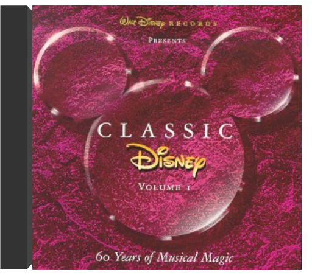
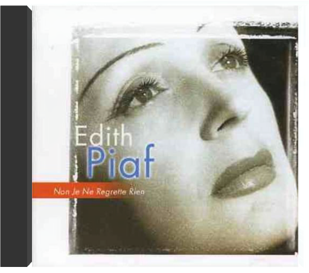
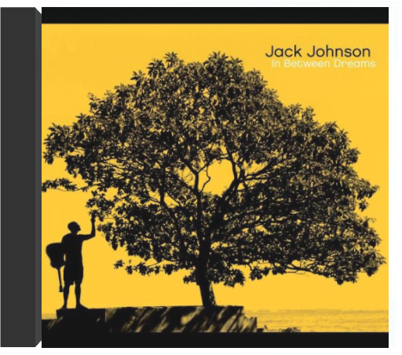
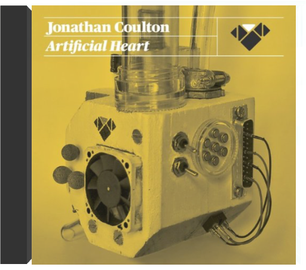
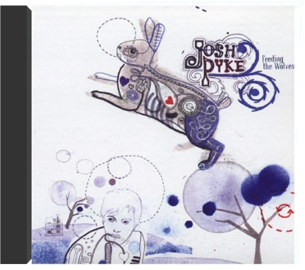

 Classic Disney, Vol. 1: 60 Years of Musical MagicDisney  The first volume of a series that collects the greatest songs from classic Disney productions like Mary Poppins, Beauty & The Beast, The Lion King, Aladdin, The Little Mermaid, Dumbo, Snow White & The Seven Dwarfs, Cinderella and many more.  Non Je Ne Regrette RienEdith Piaf All products are BRAND NEW and factory sealed. Fast shipping and 100% Satisfaction Guaranteed. Glorious Five Year PlanEnola Fall All products are BRAND NEW and factory sealed. Fast shipping and 100% Satisfaction Guaranteed. Lord of the FliesWilliam Golding This is the compelling story about a group of very ordinary small boys marooned on a coral island. At first it seems as though it is all going to be great fun; but the fun before long becomes furious and life on the island turns into a nightmare of panic and death. As ordinary standards of behaviour collapse, the whole world the boys know collapses with them - the world of cricket, homework and adventure stories - and another world is revealed beneath, primitive and terrible. |  In Between DreamsJack Johnson "In Between Dreams" is the multi-platinum selling smash from Jack Johnson. The album features classics like "Banana Pancakes", "Better Together" and "Good People".  Artificial HeartJonathan Coulton Jonathan Coulton speaks to the outcast in all of us, in the voices of characters we know from our own sad little lives. Some of them may be monsters- mad scientists, giant squids, zombies- but his talent is in turning offbeat subjects into deliciously hooky pop songs that move us in surprisingly personal ways.  Feeding the WolvesJosh Pyke It's taken Josh Pyke a bit of time to find his true voice. Actually, it's taken Josh Pyke a little time to finally become Josh Pyke. Until earlier this year, "Night Hour" was the guise for his one man band - a name to perhaps hide behind while Josh worked out where it all might lead. But now under his own name and with an amazing new recording, Josh steps forth with 'Feeding the Wolves' his first release on Ivy League Records. It is obvious from first listen to this seven track mini album that Josh's songwriting is a rare talent. The range of feelings, packaged so they bounce around inside your head like good songs do, and given so generously, go together to make 'Feeding The Wolves' the sound of an artist beginning to realise an enormous potential. 2005.  Debut album by this critically adored British female pop vocalist. 11 tracks including the single 'Smile'. It's been a whirlwind couple of months for Lily Allen. After signing a low key deal with Regal, late last year, no one could have predicted how quickly she'd make an impression on the nation. Lily, like many artists, started posting tracks on her Myspace site in November 2005, so she could gauge what people thought. The response has been phenomenal. Listens on her Myspace site now are staggering, over 2 million and rising. The support from the press, radio and TV has been fantastic. She is already a 'red top' favorite with her honesty and sharp tongue, but also has fans across the digital world and within cult publications. Regal. 2006. |

Doddridge Library
Collection Total:
417 Items
417 Items
Last Updated:
Apr 21, 2020
Apr 21, 2020
 Made with Delicious Library
Made with Delicious Library